Wir unterstützen Familien in Gambia mit medizinischer Hilfe, Therapien und diskreter Ernährungsförderung.
In Gambia gibt es viele traditionelle Heiler mit altem Wissen über Nutzpflanzen und wenig Schulmedizin. Beide haben ihre Berechtigung, aber in manchen Fällen sind Antibiose oder eine Operation unumgänglich.
Viele Verletzungen enden in Amputation oder Schlimmerem.
Osteomyelitis ist ein großes Problem in Gambia. Sie wird nicht erkannt, also auch nicht behandelt und führt oft zu Amputation.
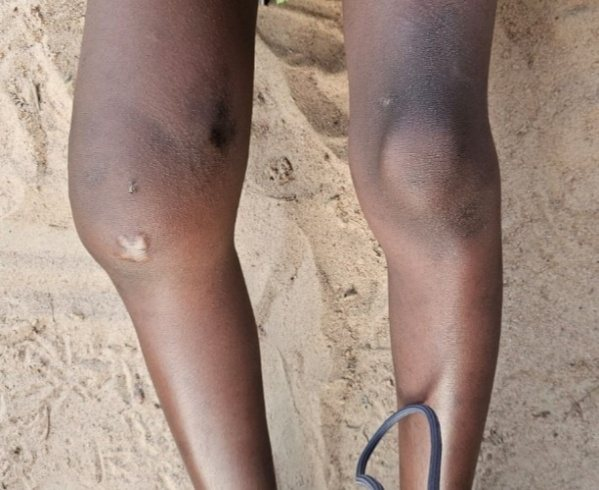
Oumie
OsteomyelitisDas hier ist das Knie unserer 13-jährigen Osteomyelitis-Patientin. Seit vielen Jahren leidet sie an einer Osteomyelitis, die zu spät erkannt und behandelt wurde. Die dunkle Stelle im Knochen über dem Knie zeigt die Größe der betroffenen Stelle an.
Wir haben uns an das britische GLOVE-Project gewandt, da wir Aufwand, Kosten und Versorgung nicht leisten konnten. Unter deren liebevoller Obhut wurde sie operiert und nach der OP versorgt.
Die OP war gut verlaufen und sie konnte langsam wieder laufen lernen. Allerdings sind die Wachstumsfugen im Knochen zerstört, was bedeutet, dass er an dieser Stelle nicht mehr wachsen kann. Oumie wird im Laufe ihres Wachstums also immer mehr humpeln, da sie ungleich lange Beine haben wird. Für Ausgleich muss immer wieder gesorgt werden.
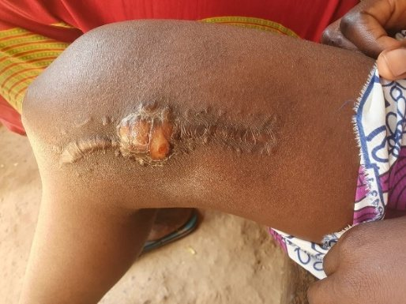
Leider hat sich 15 Monate nach der Operation die Osteomyelitis wieder gezeigt. Nur durch Antibiose war das Problem in den Griff zu bekommen – vorläufig! Wie es weitergeht, ist völlig unklar. Wir hoffen inständig, dass sie ihr Bein nicht verliert!
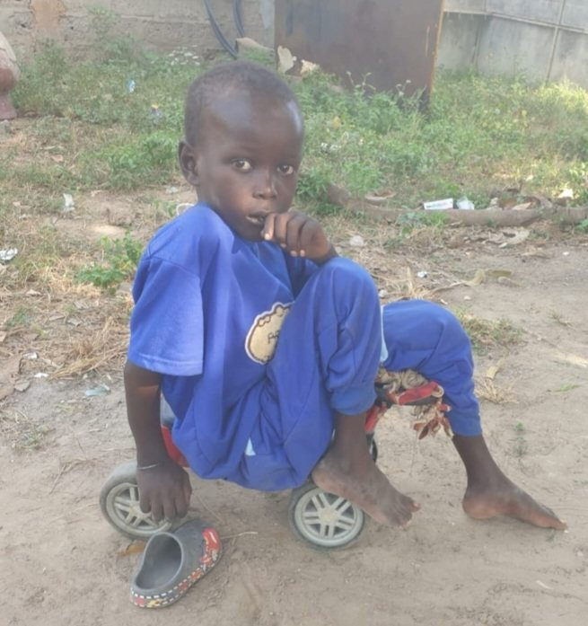
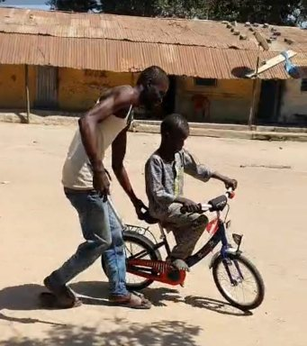
So haben wir den Sechsjährigen vorgefunden: teilnahms- und hoffnungslos saß er zusammengekauert auf einem Rutschauto für Kleinkinder. Aufgrund von Verletzungen im Kleinkindalter war auch er von Osteomyelitis bedroht. Er konnte nicht laufen und sich nur schiebend vorwärtsbewegen. Er verbrachte den ganzen Tag in sich gekehrt bei den Müttern und Kleinkindern seines Compounds. Er schaute sehnsüchtig den Gleichaltrigen hinterher, wenn sie spielen gingen. Sein größter Wunsch war, zur Schule gehen zu können, wie alle anderen in seinem Alter auch.
Von einem älteren Jungen, ebenfalls gehbehindert, bekamen wir kurzfristig einen Rollstuhl zur Verfügung gestellt, den er nicht mehr brauchte. Daraufhin war es möglich, ihn an einer Schule anzumelden. ONE LOVE – ONE HEART Gambia hat ihn jeden Tag zur Schule gebracht und abgeholt.
Weil seine Behandlung unseren Rahmen sprengte, haben wir ihn an das britische GLOVE-Project weitervermittelt. Dort wurde er monatelang behandelt und gepflegt.
Als er nach Hause zurückkehrte, konnte er am Rollator laufen. Die konsequente Physiotherapie hat sich als hilfreich erwiesen. Im Anschluss trainierte er, mittlerweile sieben Jahre alt geworden und ein aufgeweckter Junge, jeden Tag hartnäckig, um wieder alleine laufen zu lernen.
Das gelingt ihm. Er kann nun alleine kurze Strecken zurücklegen – zwar wird er immer hinken, aber das hindert ihn überhaupt nicht daran, auf Bäume zu klettern und mit seinen Freunden zu spielen.
ONE LOVE – ONE HEART Gambia hat dem heute Neunjährigen ein Fahrrad besorgt. Seither fährt er damit mit seinen Freunden zur Schule.
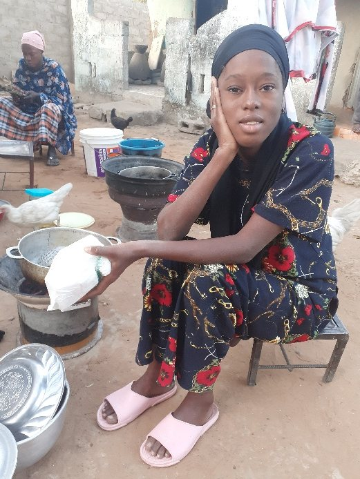
Die 14-Jährige leidet seit einem schlimmen Fieber an Myasthenia Gravis, einer unheilbaren Autoimmunerkrankung. Unser Team von ONE LOVE – ONE HEART e.V. fand sie geschwächt und unterernährt vor. Sie konnte kaum die Augen öffnen, geschweige denn die Arme heben, denn diese Erkrankung geht mit einer starken Fatigue einher. Ein von uns organisierter und finanzierter Besuch in der Kinderklinik Banjul brachte endlich die richtige Diagnose und ein Rezept für ein Medikament, das in Gambia nicht erhältlich ist und wir über Dakar/Senegal aus Frankreich importieren mussten. Seit sie damit versorgt ist, kann sie zur Schule gehen und ist ein ganz normaler wissbegieriger Teenager.
Da Myasthenia Gravis eine progressive Erkrankung ist, muss sie ein Leben lang mit diesem Medikament versorgt werden. Wenn nicht, wird ihre Muskulatur weiterhin abnehmen. Das kann dazu führen, dass auch die Lunge nicht mehr richtig arbeiten kann.
Wir besorgen das Medikament derzeit in Europa und nehmen es ihr mit nach Gambia.
Das kleine Mädchen wurde mit Trisomie 21 geboren. Zusätzlich leidet sie an einer Störung des Gangapparates. Die Vermittlung in Physiotherapie hat wahre Wunder bewirkt. Im Alter von zwei Jahren hat sie nun laufen gelernt.
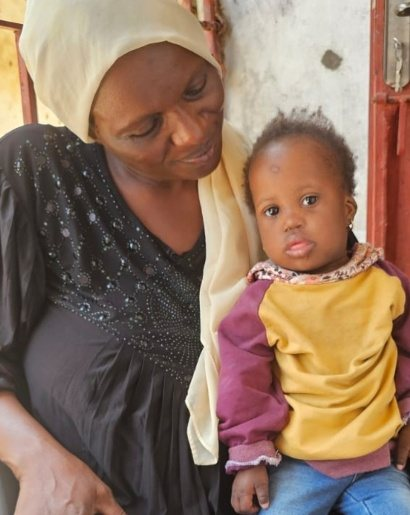
Solche Kinder gibt es in Gambia unzählige. Das sind nur ein paar besonders prägnante Fälle aus der Nachbarschaft unseres gambischen Vereinssitzes von ONE LOVE – ONE HEART e.V. in Tanji und Umgebung. Wir möchten noch viel mehr Kinder unterstützen. Fast täglich wenden sich Eltern an uns und bitten um Unterstützung. Das Wissen um die Möglichkeiten der modernen Medizin, wo sie zu finden ist und wie man sie finanzieren kann, ist oftmals gering. In Gambia gibt es immer noch viele Menschen ohne Schulbildung, nicht alphabetisiert und ohne Grundwissen über Hygiene und Wundheilung. Uns ist es ein Anliegen, dieses Wissen zu verbessern und weiterzugeben, ohne die hier gängigen Naturheilmethoden außer Acht zu lassen.
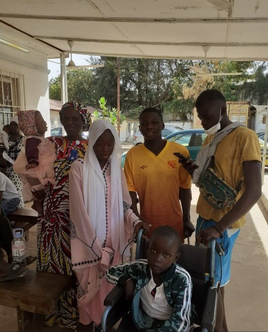
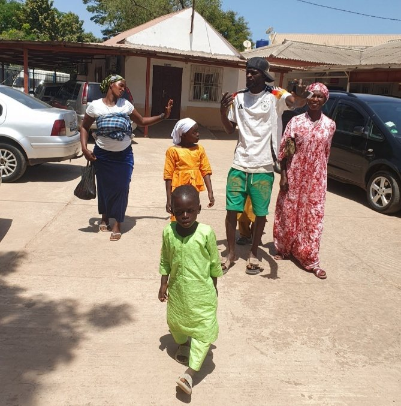
Vereinsleiter Sheriffo Baldeh mit unseren Schützlingen an der Edward Francis Clinic in Banjul
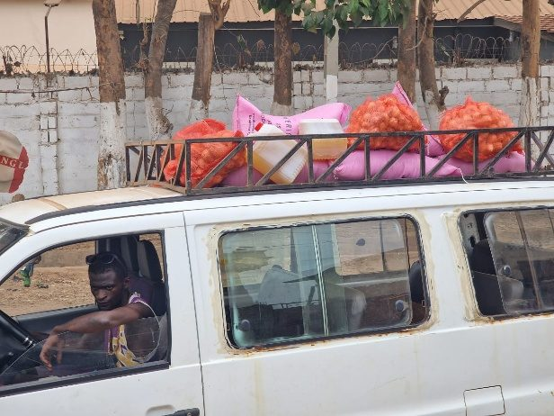
ONE LOVE – ONE HEART Gambia-Vereinsleiter Sheriffo Baldeh verteilt kurz vor Ramadan Lebensmittelspenden an unsere Zuwendungsempfänger. Reis, Zwiebeln und Öl sind die wichtigsten Lebensmittel hier. Im Ramadan sorgen auch Bohnen, Nudeln und Zucker für Abwechslung im einfachen Speiseplan der Menschen.
Ernährungssicherheit ist ein großes Thema in Gambia. Die meisten Kinder sind unter- oder mangelernährt, Hauptnahrungsmittel sind Reis, Zwiebeln und Fisch. Es wird gemeinsam aus einer großen Schüssel auf dem Boden gegessen und dabei gerecht geteilt. Für viele Familien heißt das, dass sie nicht essen können, bis sie satt sind, sondern halb hungrig den Löffel weglegen – wenn sie nicht ohnehin mit der Hand gegessen haben.
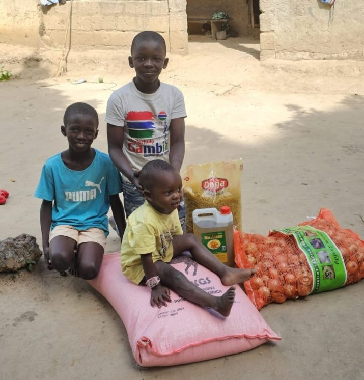
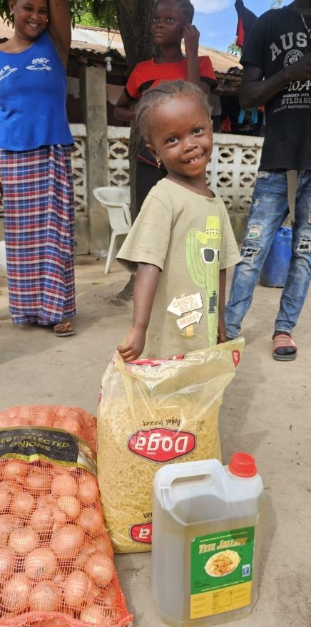
Die meisten der hier abgebildeten Personen sind alleinerziehende Mütter, Witwen mit vielen Kindern oder einkommensschwache Familien, in denen der/die Haupternährer/in krank ist oder gänzlich fehlt.
Sirre ist Witwe und lebt mit ihren acht Kindern in einem selbstgezimmerten Wellblechhaus. Sie ist eine zupackende Frau, die einen Gemüsegarten auf einem Stück Land betreibt, das ihr von einem freundlichen Nachbarn zur Verfügung gestellt wurde. Denn auch das ist Gambia: Man hilft sich, jeder wie er eben kann. Ihre älteren Kinder unterstützen ihre Mutter mit dem Gemüseverkauf auf dem Markt. Wir haben ihr ein Fahrrad besorgt, damit sie die Waren leichter transportieren können.
Uns ist wichtig, die Würde unserer Spendenempfänger zu wahren. Deswegen überbringen wir diskret die Nahrungsmittelspenden oft nachts oder am frühen Morgen, wenn Nachbarn es nicht mitbekommen. Ein weiterer Unterschied liegt in der Religionszugehörigkeit: eine der fünf Säulen des Islam ist Spenden – aber nicht, um sich damit zu zeigen, sondern schlicht um der Menschen willen. Wir versuchen uns an diese Kultur zu halten.
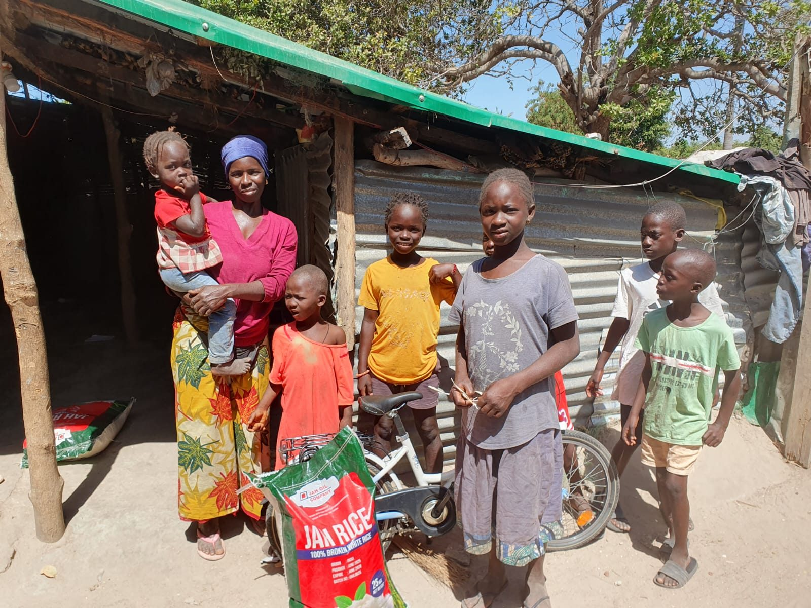
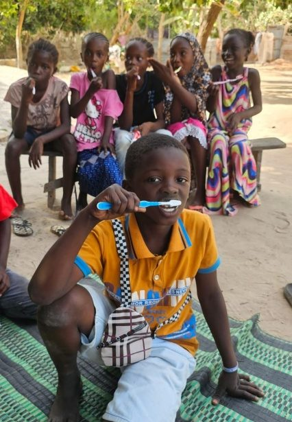
Die Zahngesundheit ist ein Stiefkind der Medizin in Gambia. Oft ziehen sich die Menschen schmerzende Zähne in ihrer Verzweiflung selbst, mit äußerst primitiven Methoden. Prävention oder auch nur der Erhalt von Zähnen sind den Wohlhabenderen vorbehalten. Also ist die gängigste Art der Behandlung das Zähneziehen – bei einer Art Bader und ohne Narkose. Hatte ein Patient eine Zahnwurzelentzündung, kann es nach einer solchen Behandlung passieren, dass er stirbt, da Eiter in die Blutbahn gelangt und eine Sepsis entsteht.
Umso wichtiger ist die Zahnhygiene. In Gambia werden Zähne normalerweise mit einem Stöckchen des Miswagbaumes geputzt.
Deswegen führen wir regelmäßig Zahnputzaktionen durch. Jedes Kind bekommt eine Zahnbürste, Zahncreme und eine gemeinschaftliche Schulung in Sachen Zähneputzen. Alle sind mit Spaß und Enthusiasmus dabei, Groß und Klein.